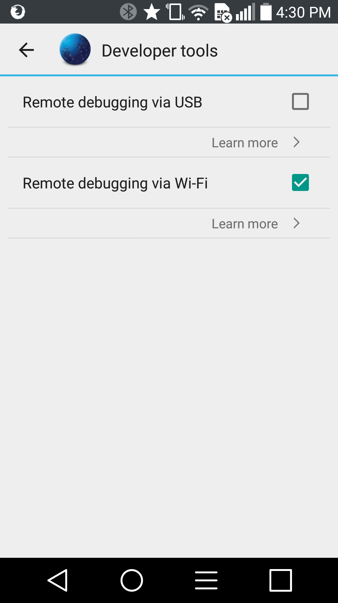
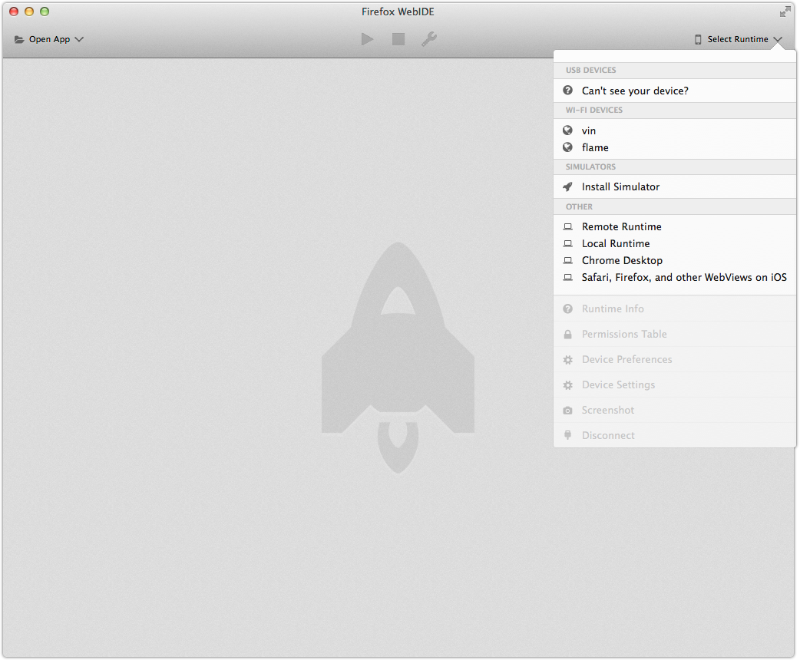
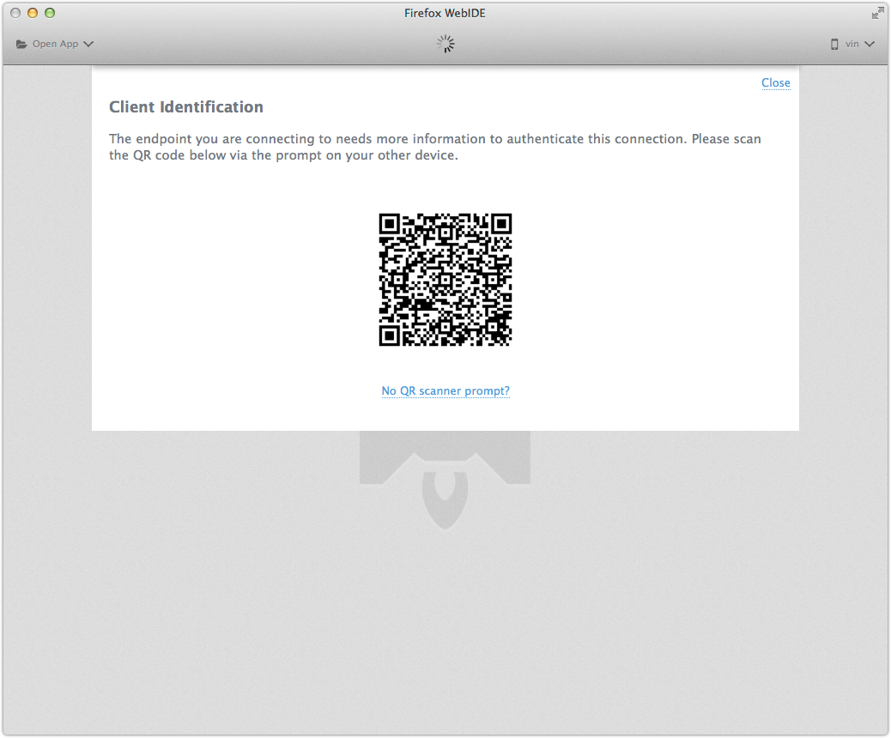

I am excited to announce that we’re now shipping WiFi debugging for Firefox for Android! It’s available in Firefox for Android 42 with Firefox Nightly on desktop.
The rest of this post will sound quite similar to the previous announcement for Firefox OS support.
WiFi debugging allows WebIDE to connect to Firefox for Android via your local WiFi network instead of a USB cable.
The connection experience is generally more straightforward (especially after connecting to a device the first time) than with USB and also more convenient to use since you’re no longer tied down by a cable.
Security
A large portion of this project has gone towards making the debugging connection secure, so that you can use it safely on shared network, such as an office or coffee shop.
We use TLS for encryption and authentication. The computer and device both create self-signed certificates. When you connect, a QR code is scanned to verify that the certificates can be trusted. During the connection process, you can choose to remember this information and connect immediately in the future if desired.
How to Use
You’ll need to assemble the following bits and bobs:
- Firefox 42
- Firefox for Android 42
- Barcode Scanner Android app by ZXing Team (for QR code scanning)
On your Android device:
- Install the Barcode Scanner Android app by ZXing Team
- Open Firefox for Android
- Go to Developer Tools Settings on device (Settings -> Developer Tools)
- Enable Remote Debugging via Wi-Fi

To connect from Firefox Desktop:
- Open WebIDE in Firefox Nightly (Tools -> Web Developer -> WebIDE)
- Click “Select Runtime” to open the runtimes panel
- Your Firefox for Android device should show up in the “WiFi Devices” section
- A connection prompt will appear on device, choose “Scan” or “Scan and Remember”
- Scan the QR code displayed in WebIDE
 
After scanning the QR code, the QR display should disappear and the “device” icon in WebIDE will turn blue for “connected”.
You can then access all of your remote browser tabs just as you can today over USB.
Technical Aside
This process does not use ADB at all on the device, so if you find ADB inconvenient while debugging or would rather not install ADB at all, then WiFi debugging is the way to go.
By skipping ADB, we don’t have to worry about driver confusion, especially on Windows and Linux.
Supported Devices
This feature should be supported on any Firefox for Android device. So far, I’ve tested it on the LG G2.
Acknowledgments
Thanks to all who helped via advice and reviews while working on Android support, including (in semi-random order):
- Margaret Leibovic
- Karim Benhmida
And from the larger WiFi debugging effort:
- Brian Warner
- Trevor Perrin
- David Keeler
- Honza Bambas
- Patrick McManus
- Jason Duell
- Panos Astithas
- Jan Keromnes
- Alexandre Poirot
- Paul Rouget
- Paul Theriault
I am probably forgetting others as well, so I apologize if you were omitted.
What’s Next
If there are features you’d like to see added, file bugs or contact the team via various channels.